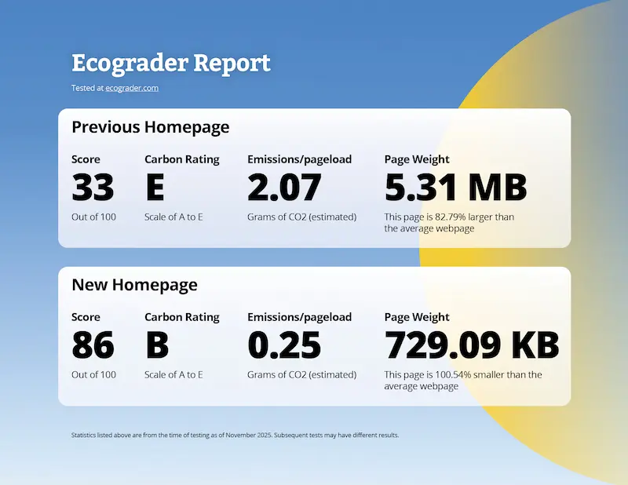
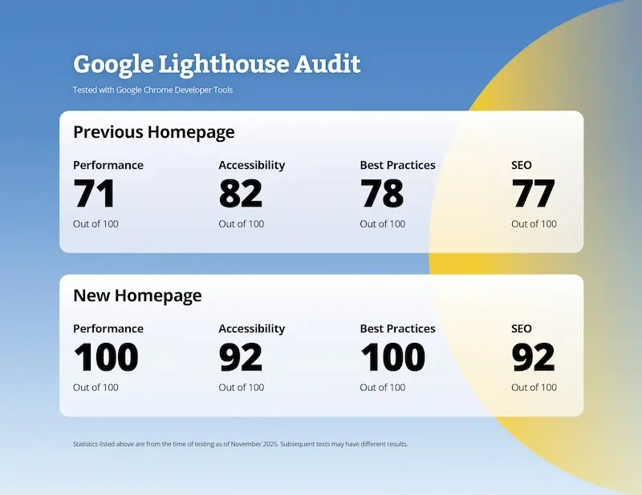
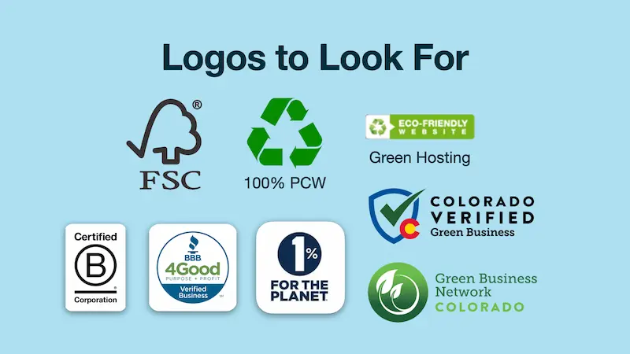
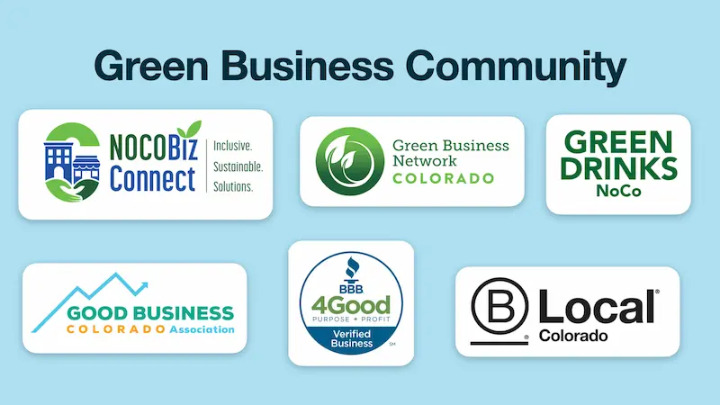

How to Build an Eco-Friendly Marketing Strategy
Part 5: Eco-Conscious Marketing
July 25, 2026
We have traveled a long road in this series. We have defined what a marketing campaign is, pulled back the curtain on the massive environmental footprint of our digital and physical worlds, and explored how the modern, purpose-driven consumer is demanding more from the brands they support.
Now, we arrive at the most important part: The How.
When we talk about sustainability, we are ultimately talking about balance. We want to manage our resources—water, energy, materials—in a smart, intentional way so that we avoid depleting the very systems that allow us to exist and thrive. In the marketing world, this means moving from awareness of the problem to the active implementation of solutions.
Whether you are managing a massive digital advertising budget or a local small business, there are concrete, actionable steps you can take right now to make your marketing eco-friendly.
The Digital Foundation: Energy and Infrastructure
Because we live in a digital-first world, our marketing lives in data centers. As we've discussed, these centers require immense amounts of electricity and water. To address this, there are two main options companies have: Green Energy and Carbon Offsetting.
- Green Energy is the gold standard. It involves using digital products and infrastructure powered directly by renewable sources like solar, wind, or hydropower.
- Carbon Offsetting is the process of compensating for your unavoidable emissions by funding projects—like reforestation—that remove carbon from the atmosphere.
While offsetting is a helpful tool, be wary of using it as an excuse to remain "business as usual." The goal should always be to move as close to 100% renewable energy as possible.
Practical Step 1: Audit and Switch Your Digital Infrastructure
If you aren't sure where your digital footprint stands, start by auditing your current tools.
- Check your hosting: Visit GreenWebFoundation.org and enter your website address. They maintain a directory of hosting providers that meet high sustainability standards.
- Grade your website: Use ecograder.com or websitecarbon.com. These tools will give you a score and an estimate of the emissions produced by every page load.

Next you’ll want to choose green alternatives. When it is time to renew your services, look for providers that prioritize the planet. For example:
[This post contains affiliate links.]
- EcoSend: Email marketing that runs on 100% renewable energy.
- GreenPT: AI with data centers run on 100% renewable energy.
- GreenGeeks: Website hosting that matches every unit of power used with three times that in renewable energy.
- Stripe: When processing payments, you can choose to add a carbon-offsetting percentage for every transaction.
The High-Performance Website: Optimization as Sustainability
One of the biggest benefits of making a website more “eco-friendly" is that it will make it faster, resulting in a better ranking among search engines. By reducing the "weight" of your website, you reduce the energy required to load it and search engines often reward this with a better rating.
Practical Step 2: Lighten Your Digital Load
Improving your website's score on EcoGrader doesn't just help the planet; it significantly boosts your user experience and SEO.
- Optimize your images: Images are often the heaviest files on a page. Convert older formats like JPG or PNG into modern, lightweight formats like WEBP or AVIF. For logos and icons, use SVG.
- Implement lazy loading: Ensure your website only loads images as the user scrolls down to them, rather than loading the entire page at once.
- Be strategic with video Video is a massive resource consumer. If you must use it, use software like Handbrake or VLC to compress it, and never set it to "autoplay." Give users the choice to click play.
- Minimize third-party scripts: Every tracking pixel, haevy analytics tool, and social media widget adds weight. Consider lighter, privacy-respecting alternatives like Fathom, Plausible, or Cabin.
- Host fonts locally: Instead of calling Google Fonts every time a gage loads, download the font, convert it to a web-optimized format like WOFF2, and host it directly on your server.
- Use caching and CDNs: Utilize caching plugins (especially on WordPress) or a Content Delivery Network (CDN) to store files closer to your users, reducing the energy needed for repeated server requests.
The Proof Is in the Performance: A Case Study
We recently applied these exact principles to the Sustainable Living Association website. By prioritizing sustainable, lightweight design, we didn't just lower their footprint—we boosted their business. Sustainable design is high-performance design.
In the first three months following the redesign, they saw:
- 13% increase in traffic
- 11% increase in sessions
- 14% increase in new users


The Physical World: Eco-Conscious Print
Marketing isn't purely digital. If your brand requires physical touchpoints, you can make a massive impact by choosing the right materials and partners.
Practical Step 3: Choose Responsible Print Partners
When ordering flyers, packaging, or business cards, look for recycled paper, water-based inks, and minimal plastic wrapping. To reduce micro-plastic shedding, prioritize high-quality paper products.
We recommend several local Colorado business who share these values:
- EcoEnclose: For sustainable packaging.
- Bloomin' Seed Paper: For paper that can actually be planted.
- YellowDog and Pioneer Press: Both offer excellent sustainability policies for local printing needs.
While shopping for products that support your marketing efforts, look for certifications like B Corp, 1% for the Planet, FSC (Forest Stewardship Council), or the Colorado Green Business Network.

Join the Movement
Building a sustainable business can feel lonely, but you don't have to do it in isolation. There are thriving communities of business owners all working toward the same goal. Joining networks like NoCo Biz Connect, Green Drinks NoCo, B Local Colorado, Colorado Green Business Network, or Good Business Colorado provides you with the education, networking, and resources to keep growing responsibly.

Your 90-Day Challenge
Don't let this information overwhelm you. The secret to real change is incremental progress. Pick just one thing from what you have learned and apply it within the next 90 days.
Here are three ways to start today:
- Grade your website on ecograder.com to see where you stand.
- Conduct a "Digital Declutter" to audit your apps and scripts (here's a guide at Whole Grain Digital).
- Book a website assessment with us at OuzelCreative.studio. We can help you identify where your site can be faster and more eco-friendly.
When you shift toward eco-conscious practices, you are not only making your business more efficient; you are also gaining a massive competitive advantage. You will outperform the competition in both consumer trust and long-term profitability.
Marketing is how you tell your story to the world. By choosing eco-conscious methods, you ensure that your story is one of growth, integrity, and a commitment to the future we all share.